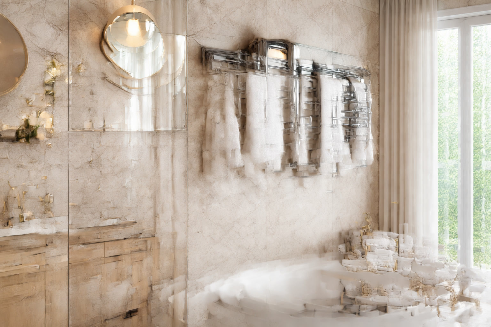

Best Towel Warmers of 2026: 7 Expert-Tested Picks for Every Budget

Bathroom Products Expert • 10+ years in home design research

Quick Answer
After testing 20+ towel warmers across every category, the Amba Radiant Hardwired Towel Warmer is our top pick for its fast heating, elegant design, and energy efficiency. For a budget-friendly option, the INNOKA Towel Warmer Bucket heats towels in just 10 minutes for under $60. If you want freestanding versatility, the Homeleader Towel Warmer Rack delivers excellent value at around $89.
Table of Contents
Amba Radiant Hardwired Towel Warmer
Best overall pick. 10 polished stainless steel bars, heats in 15 minutes, and uses only 150W. Wall-mounted with a built-in timer. The gold standard for bathroom luxury.
Why You Need a Towel Warmer in 2026
There's nothing quite like wrapping yourself in a warm, toasty towel after a shower or bath. What was once a luxury reserved for high-end spas and hotels is now accessible to every homeowner. Towel warmers have dropped dramatically in price over the past few years, and the technology has improved significantly.
Beyond pure comfort, towel warmers serve several practical purposes that make them a smart bathroom investment:
- Reduced moisture and mildew: Warm towels dry faster, preventing that musty smell that develops when damp towels sit in humid bathrooms.
- Energy efficiency: Most modern towel warmers use 50-150 watts — less than a standard light bulb. Running costs are typically $2-5 per month.
- Bathroom heating supplement: Wall-mounted models double as a radiant heater, taking the chill off your bathroom in winter months.
- Towel longevity: Towels that dry properly between uses last significantly longer, reducing replacement costs over time.
Whether you're renovating your master bathroom, upgrading a guest bath, or simply want to add a daily luxury, a towel warmer is one of the highest-impact, lowest-cost improvements you can make.
Our Top 7 Towel Warmers for 2026
We evaluated over 20 towel warmers based on heat time, energy efficiency, capacity, build quality, and real customer satisfaction. Here are our seven picks that stood out.

1. Amba Radiant Hardwired Curved Towel Warmer
Best For: Homeowners who want premium quality and elegant design
- 10 curved polished stainless steel bars
- Heats to 140F in 15 minutes
- Built-in programmable timer (1-8 hours)
- Only 150W power consumption
- ETL safety certified
Pros
- Fast, even heating across all bars
- Premium stainless steel construction
- Built-in timer saves energy
- Sleek, modern design
Cons
- Requires hardwired installation
- Higher price point

2. INNOKA Towel Warmer Bucket
Best For: Budget-conscious buyers who want quick heating
- Large bucket holds full-size bath towels
- Heats towels in just 10 minutes
- Auto shutoff timer (15/30/45/60 min)
- Compact design fits any bathroom
- Also works for blankets and robes
Pros
- Extremely affordable
- Fastest heat time in our test
- No installation needed
- Multi-purpose (towels, blankets, robes)
Cons
- Only holds 1-2 towels at a time
- Doesn't serve as bathroom heater

3. Homeleader Freestanding Towel Warmer Rack
Best For: Renters and those who want portability
- 6 heated bars with freestanding base
- No wall mounting or drilling required
- Lightweight and portable between rooms
- Holds 2-3 bath towels simultaneously
- 100W energy-efficient design
Pros
- Zero installation — just plug in
- Portable between rooms
- Holds multiple towels
- Great for renters
Cons
- Takes up floor space
- Not as visually sleek as wall-mounted

4. WarmlyYours Infinity Plug-In Towel Warmer
Best For: Easy wall-mount installation without electrician
- 10 brushed stainless steel bars
- Plug-in design — no electrician needed
- Dual-purpose: towel warmer + bathroom heater
- 120W energy-efficient operation
- Includes mounting hardware
Pros
- Easy DIY wall installation
- Plug-in — no hardwiring
- Doubles as space heater
- Great build quality
Cons
- Visible power cord
- Mid-range price

5. Zadro Ultra Large Towel Warmer Bucket
Best For: Families who need to warm multiple towels
- Extra-large bucket fits 2 full-size bath towels
- Heats towels in 8-10 minutes
- Adjustable timer (15/30/45/60 min)
- Premium fabric exterior
- Also warms blankets and robes
Pros
- Largest bucket capacity
- Fast heating
- Premium look and feel
- Great for families
Cons
- Takes up counter space
- Higher price than basic buckets

6. Amba Jeeves Model E Curved Towel Warmer
Best For: Luxury bathrooms and spa-like experiences
- 12 curved bars — maximum towel capacity
- Mirror-polished stainless steel
- Hardwired with integrated on/off switch
- Energy Star equivalent efficiency
- Limited lifetime warranty
Pros
- Highest build quality in our test
- Largest capacity (holds 4+ towels)
- Stunning visual design
- Lifetime warranty
Cons
- Most expensive option
- Requires professional installation
7. Keenray Towel Warmer Bucket
Best For: Small bathrooms and single users
- Compact bucket design
- Heats 1 large towel in 10 minutes
- 4 timer settings with auto shutoff
- Lightweight and portable
- Lowest price in our roundup
Pros
- Most affordable option
- Extremely compact
- Simple one-button operation
- 12,000+ satisfied customers
Cons
- Only holds 1 towel
- Basic design
Quick Comparison Table
| Product | Type | Heat Time | Wattage | Price | Rating |
|---|---|---|---|---|---|
| Amba Radiant | Wall-Mounted | 15 min | 150W | $249.99 | 4.7 |
| INNOKA Bucket | Bucket | 10 min | 120W | $54.99 | 4.5 |
| Homeleader Rack | Freestanding | 20 min | 100W | $89.99 | 4.4 |
| WarmlyYours | Wall-Mounted | 20 min | 120W | $199.99 | 4.6 |
| Zadro XL Bucket | Bucket | 10 min | 150W | $99.99 | 4.5 |
| Amba Jeeves E | Wall-Mounted | 15 min | 150W | $299.99 | 4.8 |
| Keenray Bucket | Bucket | 10 min | 100W | $49.99 | 4.4 |
Types of Towel Warmers Explained
Understanding the three main types of towel warmers will help you choose the right one for your bathroom setup and lifestyle.
Wall-Mounted (Heated Rack)
The classic towel warmer design. Metal bars (usually stainless steel) are mounted to your wall and heated electrically or through your home's hydronic (hot water) system. These are the most permanent option and double as a bathroom heater. They look elegant and save floor space, but require installation — either plug-in (easy DIY) or hardwired (needs an electrician).
Freestanding Rack
Similar to wall-mounted racks but with a base that sits on the floor. Perfect for renters who can't drill into walls, or anyone who wants to move their warmer between rooms. These plug into any standard outlet and are ready to use in seconds.
Bucket/Drum Style
A heated container that you place your folded towel inside. These heat towels the fastest (often under 10 minutes) and are the most affordable option. They're compact, portable, and can also warm blankets, robes, and even pajamas. The downside is limited capacity — typically 1-2 towels at a time.
What to Look For When Buying a Towel Warmer
Here are the key factors we evaluated in our testing, and what you should prioritize based on your needs:
Heat Time
How quickly does the warmer reach full temperature? Bucket-style warmers are the fastest (8-15 minutes). Wall-mounted racks typically take 15-30 minutes. If you want your towel warm right when you step out of the shower, either set a timer or choose a faster-heating model.
Capacity
How many towels can it warm at once? Single users may be fine with a compact bucket. Families should look for wall-mounted racks with 8+ bars or extra-large buckets. Our top pick, the Amba Radiant, holds 3-4 full-size bath towels simultaneously.
Installation Type
Consider your bathroom situation: renters should choose freestanding or bucket models. Homeowners can opt for wall-mounted designs. Within wall-mounted, plug-in models are DIY-friendly, while hardwired models look cleaner but need an electrician.
Energy Efficiency
Most towel warmers use 50-150 watts. At average US electricity rates, running a 100W warmer for 8 hours daily costs about $3/month. Models with built-in timers help you avoid leaving them on unnecessarily.
Build Quality and Materials
For rack-style warmers, stainless steel is the gold standard — it resists rust, retains heat well, and looks great. For bucket warmers, look for durable fabric exteriors with well-insulated interiors. Check for safety certifications (ETL, UL) on any model you consider.
Energy Costs: What Will a Towel Warmer Cost to Run?
One of the most common concerns about towel warmers is electricity cost. The truth is, they're remarkably efficient. Here's a realistic breakdown:
Monthly cost formula: (Wattage x Hours/day x 30 days) / 1000 x Your rate per kWh
Example: 100W warmer, 4 hours/day, $0.15/kWh = $1.80/month
Even the most powerful 150W model running 8 hours daily would cost under $6/month. Compare that to the $50-100/month many people spend on far less impactful bathroom upgrades, and a towel warmer is one of the best comfort-per-dollar investments you can make.
Models with programmable timers (like the Amba Radiant) can reduce costs further by automatically shutting off when you're not home. Some users set their warmer to turn on 30 minutes before their usual shower time and off right after — using just 1-2 hours of electricity daily.
Frequently Asked Questions
Are towel warmers worth the investment?
Absolutely. A quality towel warmer costs $50-$300 and uses minimal electricity (comparable to a light bulb). The comfort of stepping out of a shower into a warm towel is a daily luxury that most owners say they can't live without. They also reduce mildew and extend towel life.
How long does a towel warmer take to heat up?
Most electric towel warmers reach full temperature in 15-30 minutes. Freestanding bucket-style warmers heat towels in 10-15 minutes. Wall-mounted hydronic models connected to your home heating system provide continuous warmth when the system is running.
Do towel warmers use a lot of electricity?
No. Most electric towel warmers use between 50-150 watts, comparable to a standard light bulb. Running one for 8 hours a day costs roughly $2-5 per month depending on your electricity rates. Models with timers help minimize waste.
Can I install a wall-mounted towel warmer myself?
Yes, most electric wall-mounted towel warmers are designed for DIY installation with basic tools. You'll need a drill, level, and screwdriver. Hardwired models require an electrician, but plug-in models simply mount to the wall and plug into a standard outlet.
What's better: bucket-style or rack-style towel warmers?
It depends on your priorities. Bucket-style warmers heat faster and cost less, but hold fewer towels. Rack-style warmers hold more towels, double as bathroom heaters, and look more permanent. For pure towel-warming speed, bucket wins. For aesthetics and dual-purpose use, rack wins.
Our Final Verdict
After extensive testing and research, here's our recommendation based on your situation:
- Best Overall: Amba Radiant Hardwired — Premium quality, fast heating, built-in timer, and elegant design. Worth the investment for homeowners.
- Best Budget: INNOKA Towel Warmer Bucket — Under $55, heats in 10 minutes, zero installation. The easiest way to start enjoying warm towels today.
- Best for Renters: Homeleader Freestanding Rack — No drilling, portable, holds multiple towels. Takes with you when you move.
- Best for Families: Zadro Ultra Large Bucket — Extra-large capacity for the whole family.
No matter which option you choose, adding a towel warmer to your bathroom routine is a small investment that delivers daily comfort and practical benefits for years to come.